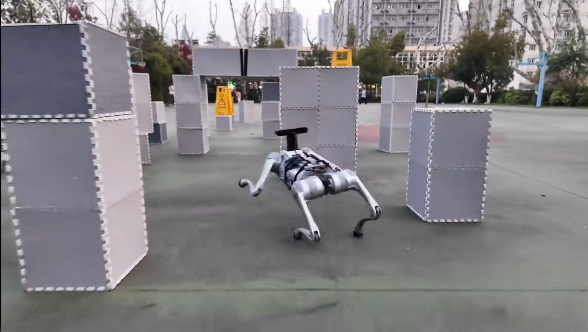

01 · ROBOTICS / REINFORCEMENT LEARNING
返回概览 ↑
四足机器人强化学习运动控制
面向四足机器人在复杂地形下的自主运动控制问题， 基于深度强化学习构建从仿真训练到实际机器人部署的运动控制流程。

项目背景
传统四足机器人控制方法通常依赖精确建模和人工设计的运动规划器， 在复杂地形和模型不确定条件下存在适应性不足的问题。 本项目采用深度强化学习方法学习机器人运动策略， 提高机器人对不同运动状态和环境条件的适应能力。
主要工作
- 构建四足机器人仿真训练环境
- 设计基于 PPO 的运动控制策略
- 完成观测空间、动作空间与奖励函数设计
- 开展策略训练、运动测试与部署验证
Python
PyTorch
PPO
Isaac Gym
Quadruped Robot